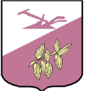
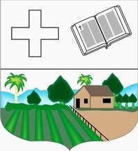

Dominican Republic
- Altagracia
- Senator: Virgilio Cedano Cedano
- Population: 360,874
- Coast of arms:
- Pedernales
- Senator: Dionis A. Sánchez Carrasco
- Population:35,280
- Coast of arms:
- Independencia
- Senator: Valentin Medrano Pérez
- Population: 58,951
- Coast of arms:
- Barahona
- Senator: Jose del Castillo Saviñon
- Population: 83 619
- Coast of arms:

- Puerto Plata
- Senator: Ginnette Bournigal
- Population:333,940
- Coast of arms:
- Samaná
- Senator: Pedro Catrain Bonilla
- Population: 113,036
- Coast of arms:
- Monte Cristi
- Senator: Ramón A. Pimentel Gómez
- Population:117,736
- Coast of arms:

- Distrito Nacional
- Senator: Faride Virginia Raful Soriano
- Population: 1,049,567
- Coast of arms:

- Hato Mayor
- Senator: Cristóbal Venerado Castillo
- Population: 35,999
- Coast of arms:
- Peravia
- Senator: Milciades M. Franjul
- Population:198,499
- Coast of arms:
- La Vega
- Senator: Ramón Rogelio Genao Durán
- Population: 412,469
- Coast of arms:
- María Trinidad Sánchez
- Senator: Alexis Victoria Yeb
- Population: 140,954
- Coast of arms:
- San Pedro de Macorís
- Senator:Franklin Peña Villalona
- Population:306,002
- Coast of arms:
- Azua
- Senator: LIA Ynocencia Díaz Santana
- Population: 59,139
- Coast of arms:
- Dajabón
- Senator: David Rafael Sosa Cerda
- Population: 25,685
- Coast of arms:
- Duarte
- Senator: Franklin Martín Romero Morillo
- Population: 299,583
- Coast of arms:

- Elías Piña
- Senator: Aris Yván Lorenzo Suero
- Population: 108,033
- Coast of arms:
- El Seibo
- Senator: Santiago Jose Zorrilla
- Population: 108,033
- Coast of arms:
- Espaillat
- Senator:Carlos Manuel Gómez Ureña
- Population: 173,442
- Coast of arms:
- Hermanas Mirabal
- Senator: Bautista Antonio Rojas Gómez
- Population: 92,045
- Coast of arms:

- La Romana
- Senator: Iván José Silva Fernández
- Population: 274,894
- Coast of arms:
- Monseñor Noue
- Senator: Hector E. Acosta
- Population:174,959
- Coast of arms:

- Monte Plata
- Senator: Lenin Valdez López
/a
- Population:191,447
- Coast of arms:

- San Cristóbal>
- Senator:Franklin Alberto Rodríguez
- Population:643,595
- Coast of arms:
- San José de Ocoa
- Senator:José Antonio Castillo Casado
- Population:53,833
- Coast of arms:

- San Juan
- Senator:Félix Bautista Rosario
- Population:220,264
- Coast of arms:
- Bahoruco
- Senator: Melania Salvador Jimenez
- Population: 114 269
- Coast of arms:
- Sánchez Ramírez
- Senator:Ricardo De Los Santos
- Population: 151,888
- Coast of arms:

- Santiago
- Senator:Eduardo Estrella Virella
- Population:1,052,08
- Coast of arms:
- Santiago Rodríguez
- Senator:Casimiro Antonio Marte Familia
- Population:57,209
- Coast of arms:

- Valverde
- Senator:Martín E. Nolasco Vargas
- Population:177,865
- Coast of arms:
- Santo domingo
- Senator: Antonio M. Taveras Guzmán
- Population: 3,389,000
- Coast of arms: